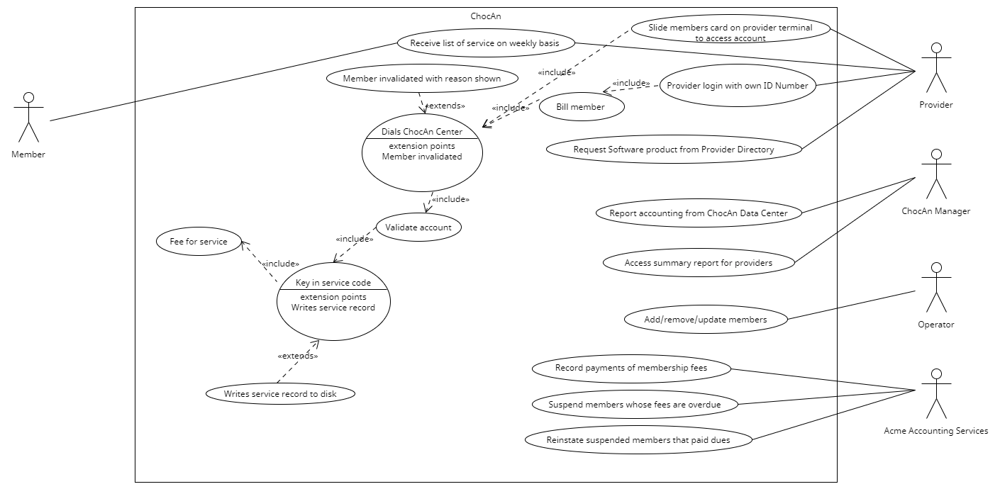

| Name | CWID | Crimson Email | Hours Spent |
|---|---|---|---|
| Evan Hardt | 12307993 | echardt@crimson.ua.edu | 4 hrs |
| Casey Derringer | 12144263 | cjderringer@crimson.ua.edu | 4 hrs |
| Charstel Walsh | 12223125 | cewalsh4@crimson.ua.edu | 4 hrs |
| Devin Moreno | 12277064 | dtmoreno1@crimson.ua.edu | 4 hrs |
| Josh Keane | 12205504 | jkeane@crimson.ua.edu | 4 hrs |
| Christian Radman | 12268645 | caradman@crimson.ua.edu | 4 hrs |
| Name | Report.html Creation | Short Paragraph | Glossary | UML Diagram | Use Case Descriptions | Total % |
|---|---|---|---|---|---|---|
| Evan Hardt | ✓ | ✓ | ✓ | 17% | ||
| Casey Derringer | ✓ | ✓ | ✓ | 17% | ||
| Charstel Walsh | ✓ | ✓ | ✓ | 16% | ||
| Devin Moreno | ✓ | ✓ | ✓ | 17% | ||
| Josh Keane | ✓ | ✓ | ✓ | 17% | ||
| Christian Radman | ✓ | ✓ | ✓ | 16% |
| Glossary | |
|---|---|
| Term | Defintion |
| ChocAn | Chocoholics Anonymous, an organization dedicated to helping people addicted to chocolate. |
| Member | Paying user of ChocAn, entitled to consultations and treatments with healthcare professionals. Each member has a member card with their nine-digit member number. |
| Operator | Worker at the ChocAn Data Center that can utilize the software when in interactive mode. |
| Manager | Worker overseeing the data processing at the ChocAn Data Center. |
| Provider | Health care professional that provides services to ChocAn members. |
| Provider Directory | An alphabetically ordered list of service names and corresponding service codes and fees. Sometimes sent to providers in an email, but also accessed through provider terminals. |
| Main Accounting Procedure | Process that reads the week's file of services provided and prints a number of reports. Each member who consulted a ChocAn provider that week also receives an email report, along with any providers who have billed ChocAn during that week. |
| Summary Report | A report that lists every provider to be paid that week, the number of consultations each had, and his or her total fee for that week. Finally, the total number of providers who provided services, the total number of consultations, and the overall fee total are printed. |
| Interactive Mode | A setting for the ChocAn Data Center Software that allows operators to add, delete, and update members and provider records. |
| Acme Accounting Services | Third-party organization that handles the payment processing for ChocAn. |
| EFT | Electronic Funds Transfer data that contains the provider name, number, and amount to be transferred for the bank to fulfill later on. |
| Service | A form of labor that is provided by ChocAn, which is publicly given for members to request. |
| Service code | A specific code in which a provider must input for the type of service that will be treated for the member. (EX: 598470 is a session with a dietitian, 883948 is an aerobics exercise session, etc.) |
| ChocAn Data Center | Stores all records of the services provided for each member, which is also used as a way to use the saved data for reports which are created by ChocAn managers. |
| Service Report | A report sent as an e-mail to any member whom has consulted a ChocAn provider during week of service. The report lists services requested by that member, sorted in order of service date. |
| Timer | Internal counter that keeps track of the time. At midnight on Friday, it contacts ChocAn Data Center to enact the main accounting procedure. |
The submitter of our HTML file is Evan Hardt. The styles.css gives the Report.html its appearance. The main report file is Report.html. The use case diagram is located in ChocAnUseCases.png. The history of the BitBucket is shown in BitBucketStatistics.png. The ChocAn Data Center is shown as an actor because it automatically sends out the main accounting procedures every Friday at midnight. Although we are not responsible for the software needed to run Acme Accounting Services, they function as an actor since they directly update the ChocAn Data Center. This collaboration of ChocAn Data Center and the external actor Acme Accounting is required for the updates every evening at 9PM. There is an interactive mode that allows operators to adjust membership status and update providers’ records. ChocAn Data Center, ACME Accounting Services, and interactive mode have a definition in the glossary for clarification.

Use Case: Member verification
Context: Process in which the member must be verified before pulling up their account.
Actors: ChocAn Provider
Main Success Scenario:
1. The member will use their card in the provider's terminal.
2. The terminal will send a verification request to the ChocAn Data Center.
2.1. The member is found within the center, and they have no issues which could have suspended their account.
3. The member's account will grant access.
4. The account should display the member's record, bills received from providers, anything that would be useful for the member and provider to view.
5. When finished, the user can log out from the member's account.
Use Case: Provider directory
Context: A storage of all of the different services provided by ChocAn. This comes in the form of an alphabetical list. Each service will be given their service codes, as well as their respective fees.
Actors: ChocAn Provider
Main Success Scenario:
1. The provider must enter their credentials.
2. The system will verify given information.
2.1. The system sends a request to verify the provider to the ChocAn Data Center.
3. The provider is given access to the directory.
4. The directory lists all services in alphabetical order, with service codes and fees next to their respective services.
5. A provider can look up specific service codes to obtain their information and fee.
5.1. An example, 598470 is the code for a session with a dietitian.
5.2. Another example, 883948 is the code for an aerobics exercise session.
6. The directory can also send an e-mail attachment of the services and fee to the provider.
7. At any time, the provider can log out of the directory.
Use Case: Edit Members
Context: An operator wants to add, delete, or update the ChocAn Data Center's Member Records
Actors: Operator, Data Processing Software
Main Success Scenario:
1. The software at the ChocAn Data Center is run in interactive mode.
2. The software displays a meny showing the different options for what an
Operator can do.
3. The Operator selects Update Member Records.
4. The system then displays the different options for editing member records
including adding, deleting, or updating members.
5. After the operator selects an option, the system displays the list of members.
5.1 If the Operator selects add, a menu is displayed with all of the
necessary member information along with blank fields.
5.2 The Operator then adds all the necessary member information to the page,
then selects create.
5.3 The new member information is stored in the ChocAn Data Center and added
to the member database.
6. If the Operator wants to modify or delete a member, they can select the member from
the list who's information he wants to modify or delete.
7. Once the Operator specifies a member, their information is displayed with the ability
to remove them from the system or modify certain fields.
7.1 The Operator selects the remove button.
7.2 The system removes that member and all of their relevant information
from the system and erases them from the Member Records.
8. Once finished, the Operator selects exit.
9. The system closes out the member list and saves any changes made during the
Operator's session.
Use Case: Send Email Reports
Context: Every week any members who received services and the provider who consulted them on these services are emailed a report. The members receive a report detailing the services they were provided with and details of their account. Providers receive details of the services they provided to members and details of their own account.
Actors: ChocAn Data Center
Main Success Scenario:
1. Members consult ChocAn Provider about specific services.
2. Members receive the service they requested.
3. ChocAn Data Center emails a report to the members of the services they received every week.
Extensions:
3a. ChocAn Data Center emails a report to the ChocAn Provider of the services they provided to members during the week.
Use Case: Update Provider Records
Context: An Operator wants to add, delete, or update the ChocAn Data Center's Provider Records
Actors: Operator, Data Processing Software
Main Success Scenario:
1. The software at the ChocAn Data Center is run in interactive mode.
2. The software displays a menu showing the different options for what
an operator can do.
3. The Operator selects Update Provider Records.
4. The system then displays the different options for modifying provider
records including adding, deleting, or updating providers.
5. After the Operator selects an option, the system displays the list of providers.
5.1 If the Operator selects add, a menu is displayed with all of the
necessary provider information along with blank fields.
5.2 The Operator then adds all the necessary provider information to the
page, then selects create.
5.3 The new provider information is stored in the ChocAn Data Center and
added to the list of providers.
6. If the Operator wants to modify or delete a provider, they can select the given provider
who's information he wants to modify or delete from the list.
7. Once the Operator specifies a provider, their information is displayed with the ability to
remove them from the system or modify certain fields.
7.1 The Operator selects the remove button.
7.2 The system removes that provider and all of their relevant information
from the system and erases them from the Provider Directory.
8. Once finished, the Operator selects exit.
9. The system closes out the provider list and saves any changes made during
the Operator's session.
Use Case: Update Membership Records
Context: Every evening at 9PM, Acme Accounting Services updates the ChocAn Data Center’s membership records. These records entail all the financial procedures, giving them the power to suspend members who have overdue payments and reinstate members who have paid their overdue payments.
Actors: Acme Accounting Services
Main Success Scenario:
1. Acme is responsible for their own software and financial procedures, including keeping track of membership payments.
1.1 Suspend members who have overdue payments.
1.2 Reinstate members who have paid their overdue payments.
2. At 9 PM every night Acme Accounting Services sends a full report to the ChocAn Data Center, updating membership records.
Extensions:
Use Case: Print Reports
Context: Format account information and provided services into a report, and set the report to print.
Actors: ChocAn Data Center Servers, Managers
Main Success Scenario:
1. Format data collected from Read Week's Services into a comprehensible report.
1.1 Includes the member's name, card number, street address, city, state, ZIP code, and services. Also includes the services' dates, providers, and names.
1.2 Order services chronologically from oldest to newest.
2. Send document to printer.
Extensions:
Use Case: Read Week's Services
Context: Compile all services provided this week. Weeks start and end on Friday at midnight.
Actors: ChocAn Data Center Servers, Managers
Main Success Scenario:
1. Compile member data. Includes each member's name, number, physical address, and a list of services received that week.
2. Compile provider data. Includes each provider's name, number, physical address, number of consultations provided, fees they are owed, and a list of all services provided that week.
Use Case: Main Accounting Procedure
Context: Performed automatically by the ChocAn data center every Friday at midnight. The system will transfer the week's service records into individual reports for members, providers, and managers. Recipients are sent a physical copy as well as an e-mail.
Actors: ChocAn Data Center Servers
Main Success Scenario:
1. Create member, provider, and summary reports by formatting collected data into a human-readable document.
2. Send all created reports to data center's printers
3. Send all created reports via e-mail